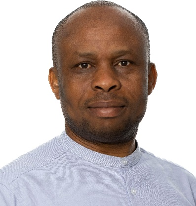
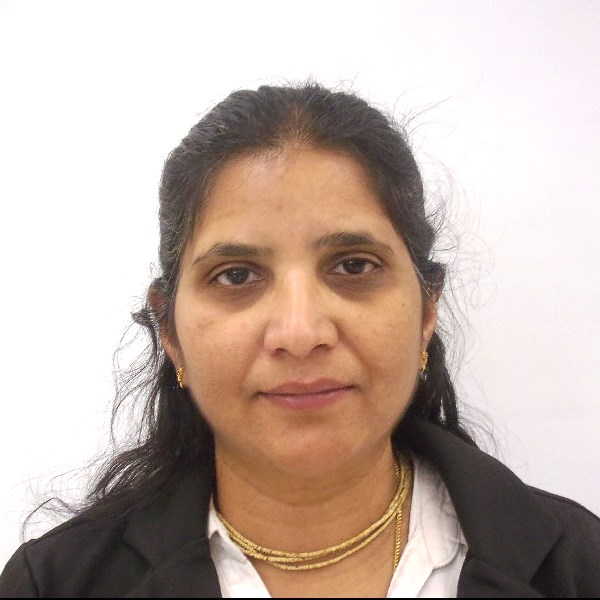
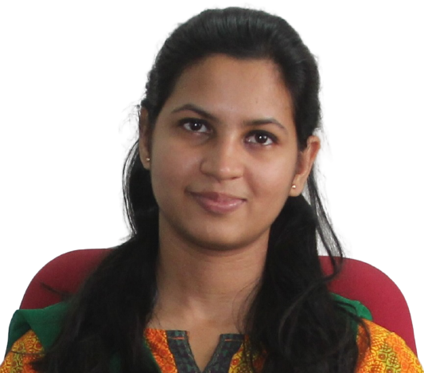

International Conference on Data Science and Computational Intelligence (ICDSCI) 2025
March 20-21, 2025
Conference Proceedings
ALL ACCEPTED & PRESENTED papers will be published in SCOPUS indexed SPRINGER PROMS.
Submission is now open: Till December 15, 2024.
Potti Sriramulu Chalavadi Mallikarjuna Rao
College of Engineering and Technology
(Autonomous), Vijayawada
Jack Sparrow Publishers
Private Limited
Potti Sriramulu Chalavadi Mallikarjuna Rao College of Engineering
and Technology (PSCMRCET) was started in the year 2008, under the
aegis of, more than hundred years old, Sri Kanyaka Parameswari
Vissamsetti Venkataratnam Hindu High Schools Committee (SKPVVHHSC
– Established in 1906), by a group of philanthropists belonging to
Vijayawada. PSCMR College of Engineering and Technology offers B.
Tech, MBA, M Tech, and MCA programmes. PSCMRCET aims to impart
quality education supported by societal responsiveness fostering
holistic development of its students. The mission of the college
is to impart quality and value-based technology and management
education relevant to contemporary corporate and societal needs
through continuous learning, societal responsiveness supported by
strategic partnerships with industry and academia. At PSCMRCET
education
...
around providing a multidimensional development programme to its
students ameliorating their interpersonal skills and corporate
etiquette thereby resulting in accelerated professional growth.
The college aspires to promote leadership through societal
responsiveness and excellence in technology and management
education. With a Governing Body consisting of Three Former Vice
Chancellors and representatives from I.T. and Core industries –
The TCS, Infosys, H-Bots, Eurth Techtronics, Galaxe Solutions
Inc., Efftronics, Govt. Water Resource Dept., Athena power,
Price Water, Sesha Sai Knittings, Minerva Group of Hotels,
PSCMRCET continues to be rated as one of the leading technical
colleges in the capital region of Andhra Pradesh. The academic
programmes that are offered in both Engineering and Management
are highly regarded. The institute is known for imparting a
high-quality professional education and training in an
atmosphere of discipline. All the stakeholders work towards
fulfilling this mission, shaping our students into people who
can play an effective role in the development of a knowledge
society. The college has been committed to the vision of making
a significant contribution to a highly advanced technological
society with profound human values by sending forth students as
people of unparalleled expertise and a high sense of ethical
values. Beyond curriculum topics on niche technologies are being
taken care of by inviting established expert resource persons
from industry and academia. A.P. State Skill Development Council
has conducted more than 151 such training programs in the last
three years. That the college is committed to providing
internships to all the students is evident from the fact the
college received an award from the AICTE for the maximum number
of internships in the southern region through Internshala. With
an ardent commitment to helping the student become a perfect
wholesome personality, the College envisages a campus that
promotes healthy interaction between faculty and students and
among the students. We have a well-structured student counseling
system to meet the noble objective of team spirit and
cooperative learning. Extra and co-curricular activities are
sincerely encouraged through different on-campus clubs and
committees. There is a PSCMR Toastmasters club, Chess Club,
Roteract club, Music Club in addition to the student chapters of
esteemed professional bodies like the Institution of Engineers,
Computer Society of India, Institution of Electronics and
Telecommunication Engineers. Participation of students in
Project expos, Hackathons, Research paper Submission, sports and
games at inter and intra-college level is highly appreciated and
encouraged. Students are reimbursed with travel expenses and
registration fees. All the activities on the campus are
meticulously planned and executed by only the students under the
mentorship of the experienced faculty. Teaching staff are
sponsored to FDPs and Seminars and non-teaching staff too are
sent to attend skill up-gradation programmes with financial aid.
PSCMR College of Engineering and Technology has become
synonymous with ultra-modern learning and the best placements.
In a short span of time, the college has emerged as one of the
prestigious educational institutions in this locality. Students
from all parts of the state are ambitious to see themselves in
this institution. That more than 67% of our students are girls
is a testimony to the faith and trust of the parents in the
institution’s strict and no compromise attitude in discipline
matters.
With the advent of IoT (Internet of Things) and Industry 4.0, the
volume of data is growing at an exponential rate. Given the
massive amount of data that is produced, it has led to the matured
discipline of Data Science that involves collection,
visualization, processing, and modeling of large and complex data
sets from different domains and sources. Data science is an
essential part of many industries today, and Its popularity has
grown over the years. Companies have started implementing data
science techniques to grow their business and increase customer
satisfaction. Its immense popularity has increased the demanding
interest among the students to choose it as a career option. Data
Science is an emerging area of Computer Science and Engineering
(CSE).The Department of CSE-Data Science was established in the
year 2022 with an annual intake of 60 students. P.G program in
Data science
...
was established in the year 2022 with an annual intake of 18
students. BTech CSE(Data Science) is a 4-year undergraduate
level course designed for you to build a distinctive career in
analytical and leadership roles in various sectors. The course
is new and trending and with a perfect blend of machine
learning, big data analytics, and statistics, helps students
gain experience in solving problems with real-world data. This
course also gives importance to areas like big data analytics,
fuzzy technologies, and artificial neural networks. It helps
students in getting ready with skills to perform decisions that
are based on data analysis. Throughout the duration of the
programme, the students are taught how to amalgamate business
knowledge, tools, and statistics to generate business value in
creative ways. It is one of the high-demanding subjects in
today’s world as it has very good career opportunities in
various sectors. Students can choose this course as it makes
them fit for the industry and start their careers as data
scientists, and data analysts. The B.Tech Program in CSE has
been accredited by the National Board of Accreditation (NBA)
successively two times i.e. in 2019, and 2022. CAREER
PROSPECTIVE FOR DATA SCIENCE STUDENTS: Data Analyst Data
Specialist Data Scientist Data Engineer Data Architect Data
Consultant TOP 10 DATA SCIENCE COMPANIES: Accenture Databricks
OpenText Splunk Unified Teradata Oracle Sisense NVIDIA Sumo
Logic Highlights: Campus Recruitment by ORACLE and other reputed
companies. Well Equipped Computer Labs with Latest Technologies.
MOU With IIT-Bombay for Spoken Tutorial: To Impart Training on
Open Source Technologies for all Engineering Streams. The
department encourages Entrepreneur Skill Development among
students in Collaboration with ESDA-New Delhi. Internships with
Internshala.com Association with International Professional
Bodies: IEEE, CSI, CII, ACM, ISTE, IETE, IAENG, IASA & IEI. Soft
Skills & CRT(Campus Recruitment Training) Programs from IInd
Year B.Tech Onwards. Training Students & Faculty on Latest
Technologies by Workshops & Seminars from Industry People and
IIT Faculty. Industrial Visits to students to introduce
forthcoming Technologies. Strong ALUMNI Network of PAW[PSCMRCET-
Alumni Wing].
Master of Computer Applications (MCA) is a two-year professional
post-graduate course for candidates wanting to delve deeper into
the world of Computer Application development with the help of
learning modern programming language. The programme is a blend of
both theoretical and practical knowledge proving in-depth
knowledge of the various computer languages and IT applications.
The Department has excellent learning facilities which include
Seminar Hall, Department Library and a dedicated Computer Lab.
Faculty members are given various opportunities to attend
workshops, short-term courses, seminars, and conferences for
updating knowledge, to cope with the continuous changes and
challenges in the field of Computer Science and its applications.
Why MCA in PSCMRCET? Hands-on Curriculum designed by experts from
academia and industry and taught by Quality Faculty
...
Members More emphasis on the latest programming languages and
tools to develop better and faster applications. Enhancing
students’ capabilities as per the career requirements and giving
them necessary placement assistance Specially organized
Workshops, Webinars and Guest Lectures by Industry experts to
provide the latest Industry insights Professional enhancement
Program focusing on aptitude, reasoning, soft skills and
interviewing skills of the student.
About the Conference
International Conference on Data Science and Computational
Intelligence (ICDSCI) 2025 is a pivotal event that embodies the core
elements of the 5th Industrial Revolution. The widespread
application of data science is revolutionizing products and
services, significantly impacting labor markets, economies, and
societies globally.
The event aims to gather scientific and technical contributions
across a broad spectrum of models, tools, technologies, and
applications in modern data science. The conference will cover the
full range of concepts from theoretical foundations to practical
implementations, including case studies, works-in-progress, and
conceptual explorations.
Important Dates
Submission Date
Manuscript submissions open: September 1, 2024
Deadline for manuscript submissions: December 15, 2024
Review Process
Under review timeline: December 15, 2024 - January 31, 2025
Notification of acceptance: February 05, 2025
Author registration deadline: February 06th to March 07th, 2025
Deadline for Final Papers
Conference program scheduled: March 20, 21st, 2025
Final revised manuscript: April 5, 2025
Key Note Speakers

Dr Elochukwu UKWANDU
Lecturer, Cardiff Schol of Technologies, Cardiff Metropolitan
University, Wales, United Kingdom
A Lecturer in Computer Security and Head of Cryptography and
Innovation Research Group, Cyber Security and Information
Network Centre, Cardiff Schol of Technologies, Cardiff
Metropolitan University, Wales, United Kingdom. He is a PhD
graduate of Edinburgh Napier University from the School of
Computing specialising in cryptography, information and cyber
security in teaching, and learning, research, and development.
Above all, a UK Moonshot creator in transformative technologies;
Fellow of Higher Education Academy (FHEA); Member, IEEE; Member
of three Peer Review Colleges - EPSRC, British Council – ISPF
and UKRI Talent Group. Elsevier has recognised him as a top Open
Access contributor (2020-2022) for having one of my articles
linked to the United Nations Sustainable Goals, helping to
tackle some of the world's greatest challenges. He founded and
Co-Ordinate an inter-disciplinary research group with academics
from more than eight different Universities in Nigeria and South
Africa as cohorts. The group focuses in solving machine
learning, social media, e-Learning, and cyber security
challenges with relevance to the African continent.
Prof. Dr. Iyyanki V. Muralikrishna
Director, Academic Programs, Haas Institute for Business
Innovation, University of California Berkeley, USA
Prof. Dr. Iyyanki V. Muralikrishna, obtained his Ph.D from the
Premier Institute -Indian Institute of Science (IISc),
Bangalore, is presently Director, Academic Programs, Haas
Institute for Business Innovation, University of California
Berkeley, USA. He is a former Dr Raja Ramanna Distinguished
Fellow at the Defense Research and Development Organization
(DRDO), India, and He served as assistant professor in IIT
Madras (1976-1979), senior scientist and Head of the Marine
Applications Division, National Remote Sensing Agency, Indian
Space Research Organisation (1979-1987), Professor and Founder
Head of the Centre for Spatial Information Technology (CSIT) at
Jawaharlal Nehru Technological (JNT) University(1990-2008), and
Director of JNT University's Research and Development Centre
(2005-2008). The National Coordinator for Geospatial Public
Health, which is the National Networking Government of India
Project. He is Professor and Founder Head of the Centre for
Spatial Information Technology (CSIT) At Jawaharlal Nehru
Technological University (1990-2005), and Director of Research
and Development Centre (2005-2008).

Sukanya Konatam
Senior Manager of Enterprise Data Governance and Data Science, Vialto Partners Texas, USA
Mrs. Sukanya Konatam Senior Manager, Enterprise Data Governance
and Data Science with over 18 years of experience enabling
companies with digital transformation and helping them become
data driven organization. A highly regarded thought leader with
an exceptional background in data science, data governance, data
Architecture, data modeling, data analytics, data visualization,
automation, BI modernization. She has implemented data centric
solutions for several industries including banking & financials,
telecom, health care, automobile, criminal justice and many
more. Currently, Sukanya is leading Enterprise Data Governance
Modernization efforts at Vialto Partners with multiple teams of
data engineers, data scientists & analysts. With her proven
record of strategic thinking and Solutions Architecture Design,
she is particularly responsible to help create a 360-degree view
for the system, data security, master data management, enrich
data sets, build modern dashboards, automate manual data
processes. She defines indicators of performance and quality
metrics and ensures compliance with data, defines roles and
responsibilities related to data governance and ensures clear
accountability. She facilitates the development and
implementation of data quality standards, data protection
standards and adoption requirements across Vialto Partners.
Graduated with “Master’s in Computer Applications” from Andhra
University, INDIA, and “Postgraduation in Artificial
intelligence & Machine learning” from UT Austin, Texas, USA.
Suryapraksh Nalluri
Senior Vice President - Information Security Operations Group
Manager, City group, Texas, USA
As a distinguished Executive Leader in Cybersecurity, he has
achieved exceptional results over his 18-year career, with a
focused dedication to cybersecurity for the past decade. His
achievements are highlighted by his pioneering of comprehensive
security strategies, which have fortified organizations against
relentless cyber threats. He has championed DevSecOps practices,
ensuring security integration throughout the software
development lifecycle, and has adeptly led security
transformation initiatives, fostering adaptive security cultures
that evolve with emerging threats. His influence extends to
digital product strategies, where he has aligned technology
innovations with security requirements. Combining a background
in both development and design, his leadership in cybersecurity
is distinguished by a unique blend of technical acumen and
creative insights. He has spearheaded vulnerability assessments
and penetration testing (VAPT) for web, mobile, and APIs,
providing vital defenses against cyber threats. Additionally, he
has effectively managed and optimized resources within his
teams, ensuring cost-effective solutions, and has driven
innovation through research and development, conceptualizing
exploits and utilizing automation to enhance cybersecurity
operations.

Dr. Ghanapriya Singh
Asst. Professor (Grade I) in Department of Electronics and
Communication Engineering at National Institute of Technology,
Kurukshetra
Dr. Ghanapriya Singh is working as an Asst. Professor (Grade I)
in Department of Electronics and Communication Engineering at
National Institute of Technology, Kurukshetra since Nov 2022.
Prior to this, she was working as an Asst. Professor (Grade II)
in Department of Electronics Engineering at National Institute
of Technology, Uttarakhand since 2013. She has received her
Ph.D. degree in Signal Processing from Indian Institute of
Technology (IIT) Delhi. During her research at IIT, she was
working on a project with STMicroelectronics, Santa Clara,
California, USA. Her research work done at IIT was also
showcased at CES, USA that is the largest consumer electronics
show. She is an Inventor on 5 granted US patents and a European
patent. She is an Investigator in the project funded by Ministry
of Electronics and Information Technology and Department of
Science and Technology, Govt. of India. She has authored in high
impact factor SCI indexed journals. Her current research
interests include context awareness, image processing, speech
processing, signal processing for IoT.
CONFERENCE FEATURES
FOCUSED NETWORKING
Provides a free and open atmosphere where attendees talk and
engage in creative ways.
EXPERT SPEAKERS
Our speakers represent the cream of research and development
practitioners worldwide.
BRILLIANT IDEAS
High-impact, collaborative and new approaches to some of the
world’s toughest problems.
EXCEPTIONAL PROGRAM
Includes demonstrations, keynote speeches, plenary panel, breakout
sessions as well as the industry program.
GLOBAL PARTICIPATION
Anticipating attendees from various countries all over the world.
INSPIRATIONAL LEARNING
Bringing together researchers from several fields to collaborate
together and create lasting change.
HONORS & AWARDS
BEST PAPER
WOMEN EXCELLENCE
SESSION WINNER
UNIQUE RESEARCH AREA
YOUNGEST AND OLDEST
BEST PRESENTATION
Indexing
Post-conference, proceedings will be made available to the following
indexing services for possible inclusion:
POTTI SRIRAMULU CHALAVADI MALLIKARJUNA RAO COLLEGE OF ENGINEERING AND TECHNOLOGY (AUTONOMOUS), VIJAYAWADA